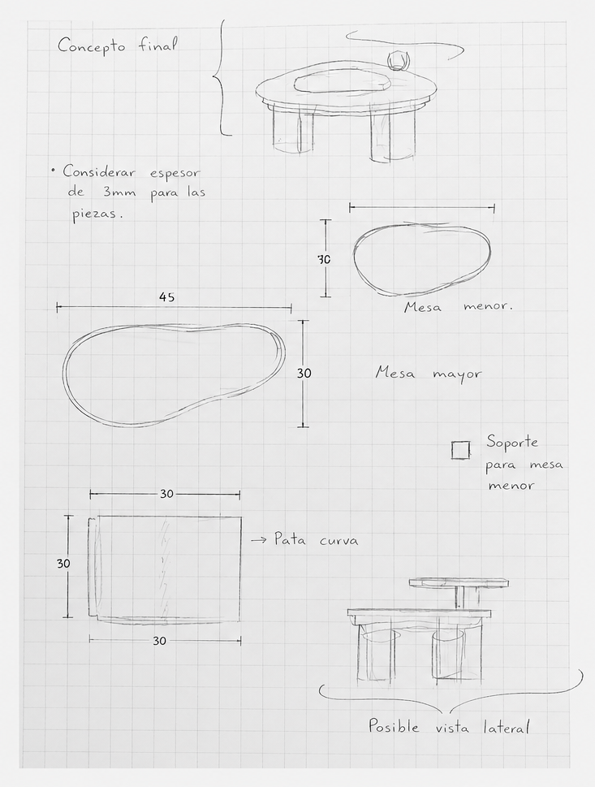
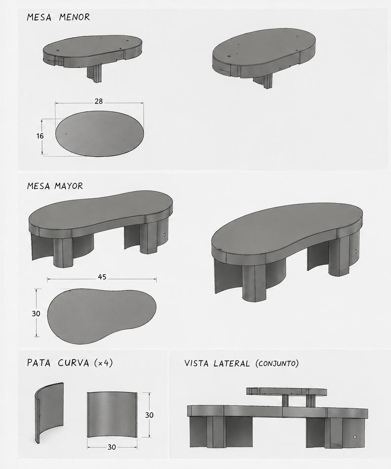
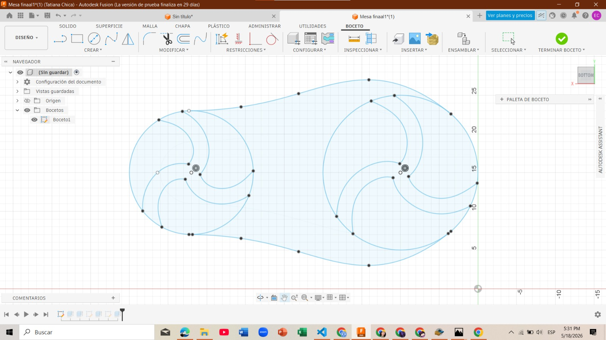
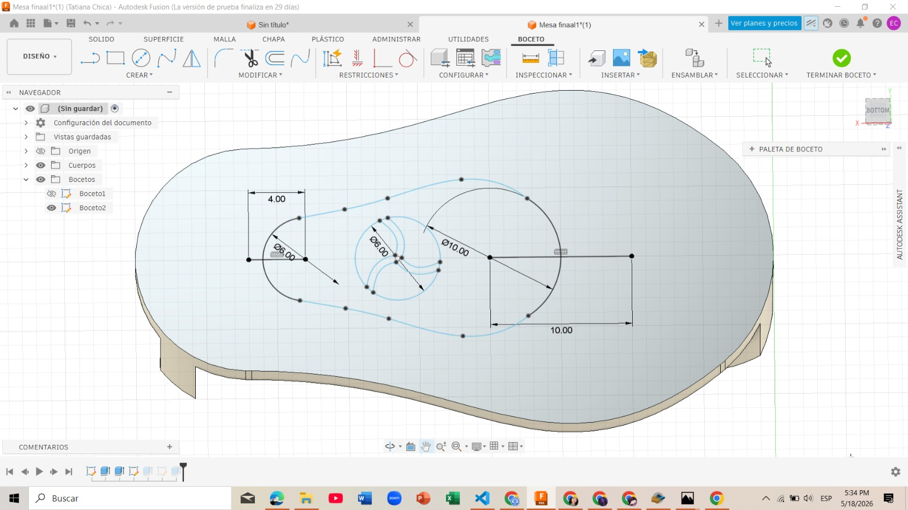
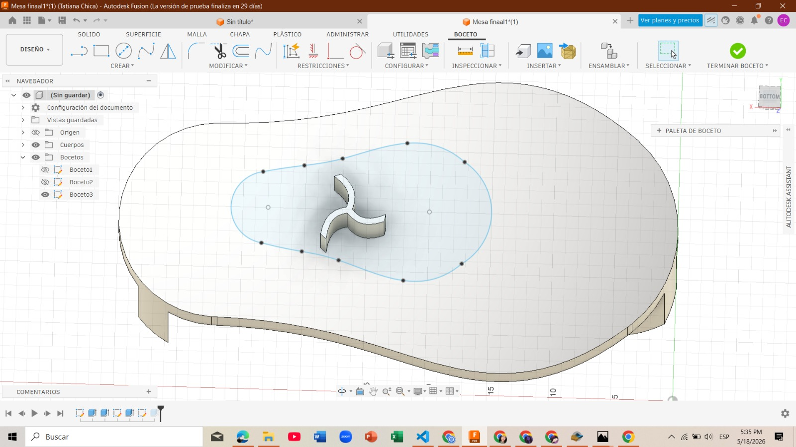
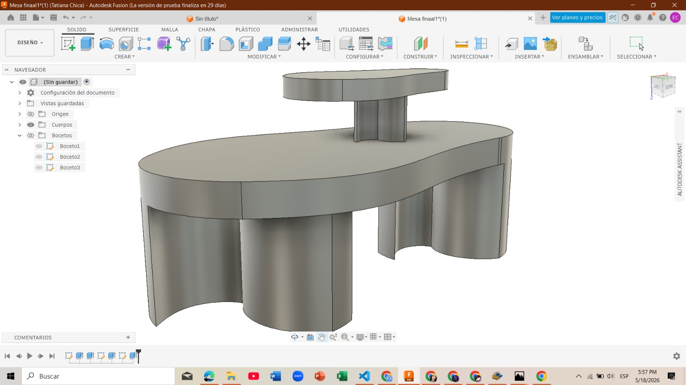
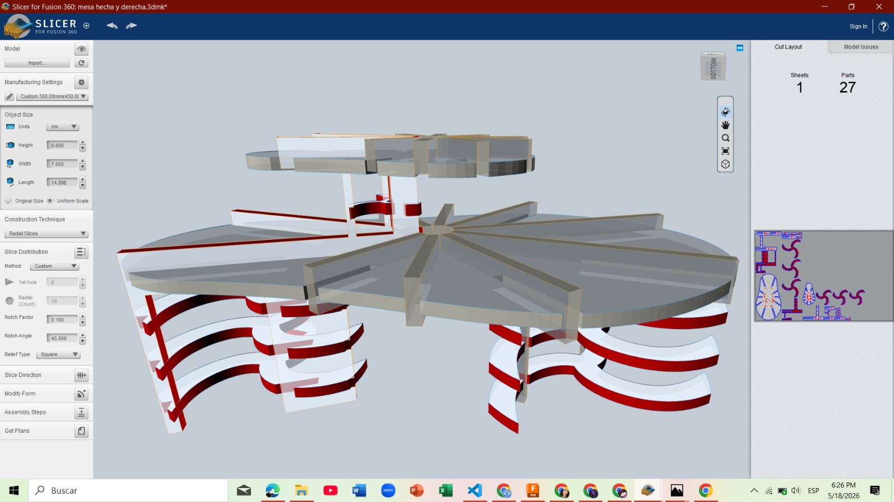
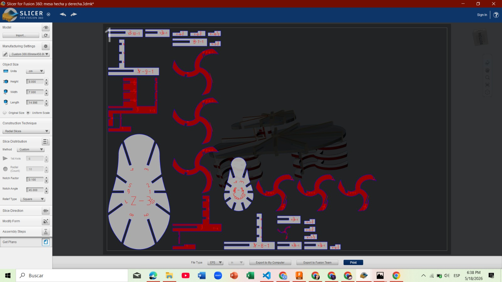

Conceptual design, digital visualization and fabrication process of a modular center table developed using manual sketching, AI-assisted rendering and FabLab technologies.
The development process began with the creation of an initial hand-drawn sketch that allowed the general structure, proportions and functionality of the center table to be defined. This first conceptual approach helped establish the aesthetic direction and the modular characteristics of the furniture design.
After completing the manual sketch, artificial intelligence tools were used to recreate and visualize the concept in a more realistic three-dimensional environment. This process made it possible to analyze the visual appearance, structural balance and design feasibility before starting the digital modeling stage.
The combination of traditional sketching techniques and AI-assisted visualization significantly improved the development process by providing a clearer representation of the final product and facilitating design adjustments during the early stages of the project.


After completing the hand sketches, the project development continued in Fusion 360, where the initial concept of the center table was digitally recreated in a more precise and functional way. The objective of this stage was to transform the conceptual idea into a manufacturable 3D model while maintaining the minimalist and modern design proposed during the first sketches.
The modeling process began with the structural components of the furniture, starting with the main upper surface of the table and the leg system. During this phase, the general proportions, dimensions, and overall geometry of the product were established in order to define the principal structure of the furniture.


After completing the primary structure, additional components were incorporated into the design. One of the most distinctive elements was the elevated upper support located on one corner of the table, conceived as a secondary functional platform capable of holding decorative or practical objects while also enhancing the visual identity of the furniture.
The final stage of the modeling process focused on refining the upper elevated platform and adjusting the proportions between all components in order to achieve a balanced and aesthetically coherent composition. Several modifications were made throughout the process to improve the visual appearance, stability, and manufacturing feasibility of the final product.

The final result was a modern minimalist center table with a unique geometric appearance and an elevated support structure that provides both functionality and aesthetic value. The design successfully combines originality, practicality, and digital fabrication principles within a contemporary furniture proposal.

After completing the 3D modeling process in Fusion 360, the final design was exported in OBJ format and imported into Slicer for Fusion 360. This software automatically generated the assembly slices and allowed the structure to be parametrized according to the material thickness and fabrication requirements.
Different radial configurations were tested in order to optimize the internal structure of the table and improve assembly precision. During this process, several parameters such as the number of radial divisions, structural intersections, and spacing distribution were modified to obtain a stable and visually balanced result.
A safety factor of 0.10 was applied to improve the pressure fitting between the MDF pieces. Additionally, the MDF thickness was configured to 3 mm to match the material provided for laser cutting.
The final dimensions of the coffee table were also adjusted during this stage. The structure was configured with an approximate height of 8 cm, a width of 7 cm, and a length of 14.996 cm.
Once the parametrization process was completed, the software generated the flat cutting layouts required for digital fabrication. These plans were later exported and prepared for AutoCAD processing before being sent to the laser cutting machine.


After exporting the fabrication files, the designs were prepared for the laser cutting process. The MDF board provided for manufacturing had approximate dimensions of 45 cm × 30 cm, so the cutting layout was carefully organized to optimize material usage and avoid unnecessary waste.
Before starting the cutting process, the machine parameters were verified, including cutting speed, laser power, and trajectory simulation. This allowed the fabrication process to be executed with greater precision and reduced the possibility of dimensional errors.
Once the cutting process began, the pieces were manufactured successfully on the first attempt, achieving clean edges and proper fitting dimensions. The laser cutting stage demonstrated the importance of accurate parametrization during the previous digital preparation phases.
After fabrication, the components were organized and prepared for the assembly stage, where the full coffee table structure was constructed using the interlocking system generated in Slicer.
Once all the pieces were fabricated, the assembly process began by organizing each component according to its position within the structure. Thanks to the parametrization performed previously, the pressure-fit system allowed the parts to connect accurately without requiring additional fastening elements.
The assembly process started with the structural supports and continued with the upper surfaces and elevated support section integrated into the coffee table design. Each component was progressively connected until the complete structure was obtained.
The final result was a modern and minimalist coffee table with a unique elevated platform integrated into the upper section, providing both aesthetic value and additional functionality for placing decorative objects.
The following video presents a complete explanation of the design process, analysis, manufacturing, and assembly developed throughout the project.